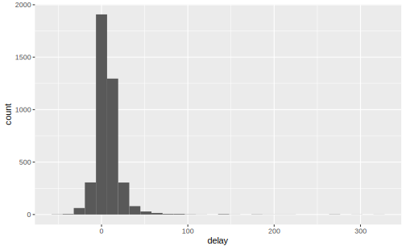
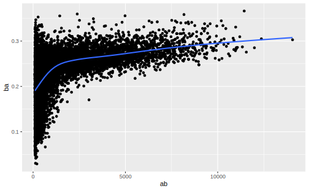

1.4 summarize()
最后一个核心函数是summarize()，它用来计算摘要统计量，可以将数据框折叠成一行：
## 计算平均出发延误时间
summarize(flights,delay = mean(dep_delay,na.rm = TRUE))
#> # A tibble: 1 x 1
#> delay
#> <dbl>
#> 1 12.6如果不和 group_by() 一起使用，那么 summarize() 也就没什么大用。group_by() 函数与 summarize() 联合使用的时候可以将分析单位从整个数据集更改为单个分组，接下来，在分组后的数据框上使用dplyr函数时，它们会自动应用到每个分组。更简单第说，你想从哪个层级上分析问题，就在group_by中对什么层级进行分组。group_by() + summarize()可以实现类似aggregate()函数的效果。
例如，我们想知道每一天的平均出发延误时间，可以先对(year,month,day)进行分组，然后再使用summarize()：
flights %>%
group_by(year,month,day) %>%
summarize(delay = mean(dep_delay,na.rm = T))
#> # A tibble: 365 x 4
#> # Groups: year, month [12]
#> year month day delay
#> <int> <int> <int> <dbl>
#> 1 2013 1 1 11.5
#> 2 2013 1 2 13.9
#> 3 2013 1 3 11.0
#> 4 2013 1 4 8.95
#> 5 2013 1 5 5.73
#> 6 2013 1 6 7.15
#> # ... with 359 more rows注意，summarize()很不同的一点就是它会自动选择列，只在结果中显示之前在group_by中进行分类的变量和summarize()中算出的摘要统计量。
这个生成的数据框只有365行，因为flights数据集中的时间跨度只有一年，(year, month, day)的唯一组合只可能有365个，这就是summarize()中的摘要函数的折叠效果：接受一个向量，只返回一个值，然后再用分组变量的一个组合来标识这个摘要量的对象（哪个层级上的平均值、最大值？）。从这个角度看，summarize()和mutate()对函数的要求恰好相反。
用aggregate()函数的写法：
aggregate(dep_delay~year+month+day,
FUN = mean,
data = flights) %>%
head(20)
#> year month day dep_delay
#> 1 2013 1 1 11.549
#> 2 2013 2 1 10.853
#> 3 2013 3 1 11.016
#> 4 2013 4 1 12.421
#> 5 2013 5 1 2.903
#> 6 2013 6 1 2.778
#> 7 2013 7 1 56.234
#> 8 2013 8 1 34.574
#> 9 2013 9 1 4.233
#> 10 2013 10 1 -0.099
#> 11 2013 11 1 13.273
#> 12 2013 12 1 9.004
#> 13 2013 1 2 13.859
#> 14 2013 2 2 5.422
#> 15 2013 3 2 8.027
#> 16 2013 4 2 8.260
#> 17 2013 5 2 6.389
#> 18 2013 6 2 34.013
#> 19 2013 7 2 19.285
#> 20 2013 8 2 13.254比较这两个结果，我们可以发现group_by()中越靠后的参数是越基本的单位，group_by(year,month,day)将按照 day, month, year 的顺序开始循环 ； 而 aggregate() 函数则正好相反
1.4.1 Missing values in summarize()
在按照日期计算平均出发延误时间的例子中，使用 mean() 时设置了参数na.rm = T，如果没有这样做，很多日期的平均延误时间将是缺失值：
flights %>%
group_by(year,month,day) %>%
summarize(delay = mean(dep_delay))
#> # A tibble: 365 x 4
#> # Groups: year, month [12]
#> year month day delay
#> <int> <int> <int> <dbl>
#> 1 2013 1 1 NA
#> 2 2013 1 2 NA
#> 3 2013 1 3 NA
#> 4 2013 1 4 NA
#> 5 2013 1 5 NA
#> 6 2013 1 6 NA
#> # ... with 359 more rows这是因为聚合函数遵循缺失值的一般规则：如果输入中有缺失值，那么输出也是缺失值。好在所有聚合函数都有一个 na.rm 参数，可以在计算前出去缺失值。
在这个示例中，缺失值来源于取消的航班。我们也可以先取出取消的航班来解决却实质问题。保存去除缺失值的数据集为not_cancelled，以便我们可以在接下来的几个示例中继续使用：
not_cancelled <- flights %>%
filter(!is.na(dep_delay), !is.na(arr_delay))
not_cancelled %>%
group_by(year,month,day) %>%
summarize(delay = mean(dep_delay))
#> # A tibble: 365 x 4
#> # Groups: year, month [12]
#> year month day delay
#> <int> <int> <int> <dbl>
#> 1 2013 1 1 11.4
#> 2 2013 1 2 13.7
#> 3 2013 1 3 10.9
#> 4 2013 1 4 8.97
#> 5 2013 1 5 5.73
#> 6 2013 1 6 7.15
#> # ... with 359 more rows1.4.2 计数函数
n() 函数是一个与摘要函数 summarize() 配合的计数函数，它不需要任何参数，单独使用时，它计算的就是行计数：
和 group_by() 联合使用时，它可以计算分组变量的每个水平上各有多少个观测：
## 每个月各有多少趟航班
flights %>%
group_by(month) %>%
summarize(n = n()) ## 等价于summarize(n = sum(month))
#> # A tibble: 12 x 2
#> month n
#> <int> <int>
#> 1 1 27004
#> 2 2 24951
#> 3 3 28834
#> 4 4 28330
#> 5 5 28796
#> 6 6 28243
#> # ... with 6 more rowsn()会把缺失值也包含到计数中，如果想要计算出非缺失值的数量，可以使用sum(is.na(x))。如果想要计算唯一值的数量，可以使用n_distinct()
## 哪个目的地有最多的航空公司？
flights %>%
group_by(dest) %>%
summarize(carriers = n_distinct(carrier)) %>%
arrange(desc(carriers))
#> # A tibble: 105 x 2
#> dest carriers
#> <chr> <int>
#> 1 ATL 7
#> 2 BOS 7
#> 3 CLT 7
#> 4 ORD 7
#> 5 TPA 7
#> 6 AUS 6
#> # ... with 99 more rows除了n() 以外， dplyr 提供了 4 个正式的计数函数：
tally(x, wt = NULL, sort = FALSE, name = "n")
count(x, ..., wt = NULL, sort = FALSE, name = "n",
.drop = group_by_drop_default(x))
add_tally(x, wt, sort = FALSE, name = "n")
add_count(x, ..., wt = NULL, sort = FALSE, name = "n")x %>% group_by(var) %>% tally() 是简化版的 group_by(var) + summarize(n())
x %>% count(var) 等价于 x %>% gruop_by(var) %>% tally()
x %>% group_by(var) %>% add_tally 在 原数据集 中增添一列，记录 var 的不同水平的计数，等价于 x %>% add_count(var)，注意这两个函数返回值的维度和原数据框相同(摘要数据框往往不利于细节观察)！！它们等价于 group_by(var) %>% mutate(n())
# 无分组时，tally()即为样本数
mtcars %>%
tally()
#> n
#> 1 32
# tally() 的一般用法
mtcars %>%
group_by(cyl) %>%
tally()
#> # A tibble: 3 x 2
#> cyl n
#> <dbl> <int>
#> 1 4 11
#> 2 6 7
#> 3 8 14
# count() 等价 group_by() + tally()
mtcars %>%
count(cyl)
#> # A tibble: 3 x 2
#> cyl n
#> <dbl> <int>
#> 1 4 11
#> 2 6 7
#> 3 8 14
# count() 也可以在已有分组上继续分组
mtcars %>%
group_by(gear) %>%
count(carb)
#> # A tibble: 11 x 3
#> # Groups: gear [3]
#> gear carb n
#> <dbl> <dbl> <int>
#> 1 3 1 3
#> 2 3 2 4
#> 3 3 3 3
#> 4 3 4 5
#> 5 4 1 4
#> 6 4 2 4
#> # ... with 5 more rows
# add_tally() is short-hand for mutate()
mtcars %>%
add_tally()
#> # A tibble: 32 x 12
#> mpg cyl disp hp drat wt qsec vs am gear carb n
#> <dbl> <dbl> <dbl> <dbl> <dbl> <dbl> <dbl> <dbl> <dbl> <dbl> <dbl> <int>
#> 1 21 6 160 110 3.9 2.62 16.5 0 1 4 4 32
#> 2 21 6 160 110 3.9 2.88 17.0 0 1 4 4 32
#> 3 22.8 4 108 93 3.85 2.32 18.6 1 1 4 1 32
#> 4 21.4 6 258 110 3.08 3.22 19.4 1 0 3 1 32
#> 5 18.7 8 360 175 3.15 3.44 17.0 0 0 3 2 32
#> 6 18.1 6 225 105 2.76 3.46 20.2 1 0 3 1 32
#> # ... with 26 more rows
# add_count() is a short-hand for group_by() + add_tally()
mtcars %>%
add_count(cyl, name = "count") %>%
select(cyl, count)
#> # A tibble: 32 x 2
#> cyl count
#> <dbl> <int>
#> 1 6 7
#> 2 6 7
#> 3 4 11
#> 4 6 7
#> 5 8 14
#> 6 6 7
#> # ... with 26 more rows
# add_count() is useful for groupwise filtering
# e.g.: show details for species that have a single member
starwars %>%
add_count(species) %>%
filter(n == 1)
#> # A tibble: 29 x 14
#> name height mass hair_color skin_color eye_color birth_year gender homeworld
#> <chr> <int> <dbl> <chr> <chr> <chr> <dbl> <chr> <chr>
#> 1 Gree~ 173 74 <NA> green black 44 male Rodia
#> 2 Jabb~ 175 1358 <NA> green-tan~ orange 600 herma~ Nal Hutta
#> 3 Yoda 66 17 white green brown 896 male <NA>
#> 4 Bossk 190 113 none green red 53 male Trandosha
#> 5 Ackb~ 180 83 none brown mot~ orange 41 male Mon Cala
#> 6 Wick~ 88 20 brown brown brown 8 male Endor
#> # ... with 23 more rows, and 5 more variables: species <chr>, films <list>,
#> # vehicles <list>, starships <list>, n <int>另外， sort = T 可以使观测按照计数倒序排列，name 可以指定新生成的计数行名字（默认为“n”):
not_cancelled %>%
count(dest, sort = T, name = "count")
#> # A tibble: 104 x 2
#> dest count
#> <chr> <int>
#> 1 ATL 16837
#> 2 ORD 16566
#> 3 LAX 16026
#> 4 BOS 15022
#> 5 MCO 13967
#> 6 CLT 13674
#> # ... with 98 more rows还可以提供一个加权变量。例如，可以使用一下代码算出每架飞机飞行的总里程（实际上就是按计算某变量分组上另一个变量的和）：
not_cancelled %>%
count(tailnum, wt = distance)
#> # A tibble: 4,037 x 2
#> tailnum n
#> <chr> <dbl>
#> 1 D942DN 3418
#> 2 N0EGMQ 239143
#> 3 N10156 109664
#> 4 N102UW 25722
#> 5 N103US 24619
#> 6 N104UW 24616
#> # ... with 4,031 more rows进行聚合时，包含一列计数 n() 或非缺失值的计数 sum(!is.na()) 很有用。这样就可以检查一下，以确保自己没有基于非常有限的样本做结论。
例如，查看一下具有最长平均到达延误时间的飞机（基于飞机编号进行识别):
delays <- not_cancelled %>%
group_by(tailnum) %>%
summarize(delay = mean(arr_delay))
ggplot(delays) +
geom_histogram(aes(delay))
有些飞机的平均到达延误事件竟然接近 300 分钟，我们可以画一张航班数量和平均延误时间的散点图，一遍获得更深刻的理解:
## n = n()对group_by中的变量水平进行计数，生成一个计数变量命名为n
delays <- not_cancelled %>%
group_by(tailnum) %>%
summarize(
delay = mean(arr_delay),
n = n())
ggplot(delays) + geom_point(aes(x = n,y = delay),alpha = 0.1)
从散点图可以看出，如果航班对应的出航次数非常少时，平均延误时间的变动特别大，所有延误时间较长的航班的出航次数几乎都在 0 右边一点点。这张图的形状非常能说明问题:当绘制均值（或其他摘要统计量）和分组规模的关系时，总能看到样本量的增加，变动在不断减小。（样本统计量的方差随样本数变小）。
这种数据模式还有另外一种常见的变体。我们来看一下棒球击球手的平均表现与击球次数之间的关系。我们用Lahman包中的数据埃及算棒球大联盟中的每个棒球队员的加大率（安打数 / 打数):
library(Lahman)
batters <- Batting %>%
group_by(playerID) %>%
summarize(
ba = sum(H,na.rm = T) / sum(AB,na.rm = T),
ab = sum(AB,na.rm = T))
batters %>%
filter(ab > 100) %>%
ggplot(aes(ab, ba)) +
geom_point() +
geom_smooth(se = FALSE)
当绘制击球手的能力（用打击率 ba 衡量）与击球机会数量（用总打数ab衡量）之间的关系时，可以看到两个趋势：
- 总大数越多，不同击球手的打击率之间变动越小
- 能力（ba）和击球机会数量（ab）之间存在正相关。这是因为球队会控制击球手的出场，很显然，球队会优先选择最好的队员。
这对球员排名也有重要印象，如果只是使用desc(ba)进行排序，明显受益的将是那些因为出场数很少而侥幸有很高击打率的球员，而不是真正能力最高的球员：
1.4.3 逻辑值的计数和比例:sum(x > 10) 和 mean(y == 0)
当与数值型函数一同使用时，TRUE会转换为1，FALSE会转换为0。这使得sum()和mean()非常适用于逻辑值：sum()可以找出x中TRUE的数量，mean()则可以找出比例。
## 每天中有多少架航班是在早上5点前出发的？（这通常表明前一天延误的航班数量）
not_cancelled %>%
group_by(year,month,day) %>%
summarize(n_early = sum(dep_time < 500))
#> # A tibble: 365 x 4
#> # Groups: year, month [12]
#> year month day n_early
#> <int> <int> <int> <int>
#> 1 2013 1 1 0
#> 2 2013 1 2 3
#> 3 2013 1 3 4
#> 4 2013 1 4 3
#> 5 2013 1 5 3
#> 6 2013 1 6 2
#> # ... with 359 more rows
## 每天中到达时间误超过一小时的航班比例是多少？
not_cancelled %>%
group_by(year,month,day) %>%
summarize(hour_perc = mean(arr_delay > 60))
#> # A tibble: 365 x 4
#> # Groups: year, month [12]
#> year month day hour_perc
#> <int> <int> <int> <dbl>
#> 1 2013 1 1 0.0722
#> 2 2013 1 2 0.0851
#> 3 2013 1 3 0.0567
#> 4 2013 1 4 0.0396
#> 5 2013 1 5 0.0349
#> 6 2013 1 6 0.0470
#> # ... with 359 more rows1.4.4 其他常用的摘要函数
R中还提供了许多常用的摘要函数
位置度量
我们已经使用过mean(x)、但用 median(x) 计算中位数也非常有用。
## 将聚合函数和逻辑筛选组合起来使用
not_cancelled %>% group_by(year,month,day) %>% summarize(
## 延误时间的中位数
arr_delay1 = median(arr_delay),
## 正延误时间的中位数
arr_delay2 = median(arr_delay[arr_delay > 0])
)
#> # A tibble: 365 x 5
#> # Groups: year, month [12]
#> year month day arr_delay1 arr_delay2
#> <int> <int> <int> <dbl> <dbl>
#> 1 2013 1 1 3 17
#> 2 2013 1 2 4 16
#> 3 2013 1 3 1 16
#> 4 2013 1 4 -8 16
#> 5 2013 1 5 -7 11
#> 6 2013 1 6 -1 15
#> # ... with 359 more rows分散程度度量sd(x)、IQR(x)和mad(x)
标准差是分散程度的标准度量方式。四分位距INterquartile RangeIQR(x)和绝对中位差mad(x)基本等价，更适合有离群点的情况：
## 为什么到某些目的地距离比到其他目的地更多变？
not_cancelled %>% group_by(dest) %>% summarize(distance_sd = sd(distance)) %>% arrange(desc(distance_sd))
#> # A tibble: 104 x 2
#> dest distance_sd
#> <chr> <dbl>
#> 1 EGE 10.5
#> 2 SAN 10.4
#> 3 SFO 10.2
#> 4 HNL 10.0
#> 5 SEA 9.98
#> 6 LAS 9.91
#> # ... with 98 more rows秩的度量:min(x)、quantile(x,0.25)和max(x)
分位数是中位数的扩展。例如quantile(x,0.25)会找出x中按从小到大顺序大于前25%而小于后75%的值（即下四分位数）
## 每天最早和最晚的航班何时出发？
not_cancelled %>% group_by(year,month,day) %>% summarize(first = min(dep_time),last = max(dep_time))
#> # A tibble: 365 x 5
#> # Groups: year, month [12]
#> year month day first last
#> <int> <int> <int> <int> <int>
#> 1 2013 1 1 517 2356
#> 2 2013 1 2 42 2354
#> 3 2013 1 3 32 2349
#> 4 2013 1 4 25 2358
#> 5 2013 1 5 14 2357
#> 6 2013 1 6 16 2355
#> # ... with 359 more rows定位度量:first(x)、nth(x,n)、last(x)
这几个函数的作用与x[1]、x[n]和x[length(x)]相同，只是当定位不存在时（比如尝试从只有两个元素的分组中得到第三个元素），这些函数允许通过参数default设置一个默认值，而后者不能正常工作。
## 找出每天排在第10的的出发时间记录
not_cancelled %>%
group_by(month,year,day) %>%
summarize(tenth_dep = nth(dep_time,10))
#> # A tibble: 365 x 4
#> # Groups: month, year [12]
#> month year day tenth_dep
#> <int> <int> <int> <int>
#> 1 1 2013 1 558
#> 2 1 2013 2 554
#> 3 1 2013 3 552
#> 4 1 2013 4 553
#> 5 1 2013 5 555
#> 6 1 2013 6 558
#> # ... with 359 more rows1.4.5 多个分组变量的消耗
当时用多个分组变量时，每使用一次summarize就会消耗掉一个分组变量，如group_by(year,month,day)经过一次summarize后生成的数据集默认在(year,month)上分组，这使得我们可以对数据集进行循序渐进的分析：
daily <- not_cancelled %>% group_by(year,month,day)
## 每天有多少架航班记录
(per_day <- daily %>%
summarize(flights = n()))
#> # A tibble: 365 x 4
#> # Groups: year, month [12]
#> year month day flights
#> <int> <int> <int> <int>
#> 1 2013 1 1 831
#> 2 2013 1 2 928
#> 3 2013 1 3 900
#> 4 2013 1 4 908
#> 5 2013 1 5 717
#> 6 2013 1 6 829
#> # ... with 359 more rows
## 每月有多少架航班记录
(per_month <-
per_day %>%
summarize(flights = sum(flights)))
#> # A tibble: 12 x 3
#> # Groups: year [1]
#> year month flights
#> <int> <int> <int>
#> 1 2013 1 26398
#> 2 2013 2 23611
#> 3 2013 3 27902
#> 4 2013 4 27564
#> 5 2013 5 28128
#> 6 2013 6 27075
#> # ... with 6 more rows
## 等价于not_cancelled %>% group_by(year,month) %>% summarize(flights = n())
## 每年有多少架航班记录
(per_year <-
per_month %>%
summarize(flights = sum(flights)))
#> # A tibble: 1 x 2
#> year flights
#> <int> <int>
#> 1 2013 327346
## 等价于not_cancelled %>% group_by(year) %>% summarize(flights = n()) 由于分组操作拥有这样的“继承性质”，有的时候可能想要取消分组，并回到未分组的数据继续操作，那么可以使用ungroup()函数取消分组：
daily %>%
ungroup() %>%
summarize(flights = n()) ## 对数据集整体进行摘要统计
#> # A tibble: 1 x 1
#> flights
#> <int>
#> 1 327346在循序渐进地进行摘要分析的时候，需要小心：使用求和与计数操作是没有问题的，但如果想要使用加权平均和方差的话，就要仔细考虑一下，任何基于秩的统计数据（如中位数，分为差）都不支持这样的操作。换句话说，对分组结果再求和就是对整体求和，但各分组中的中位数的中位数可不是整体的中位数。